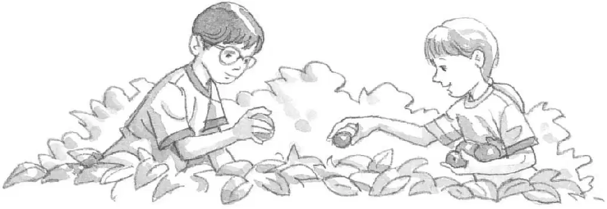
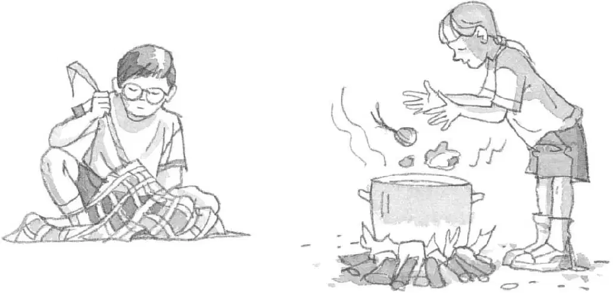
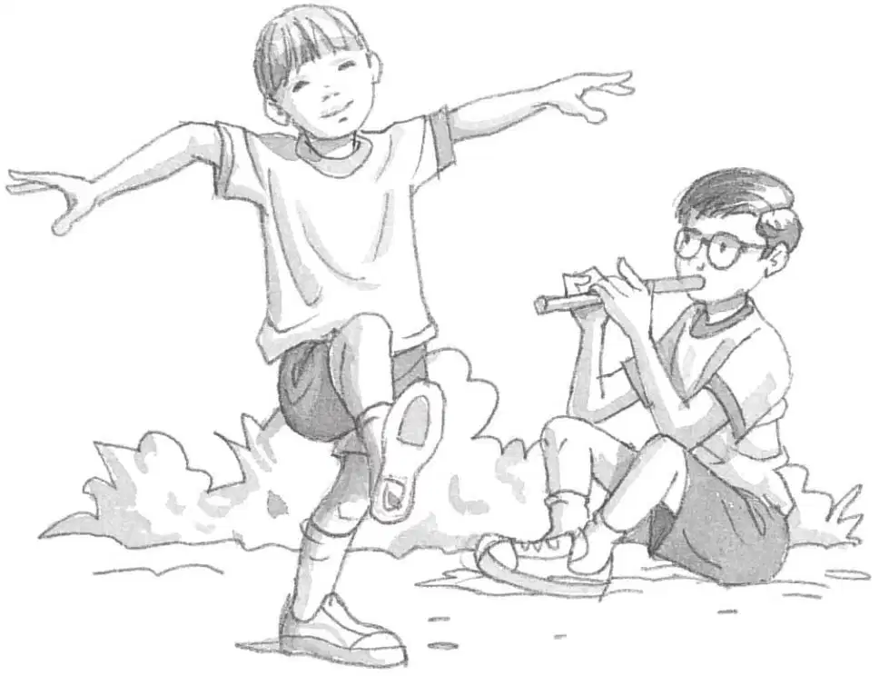
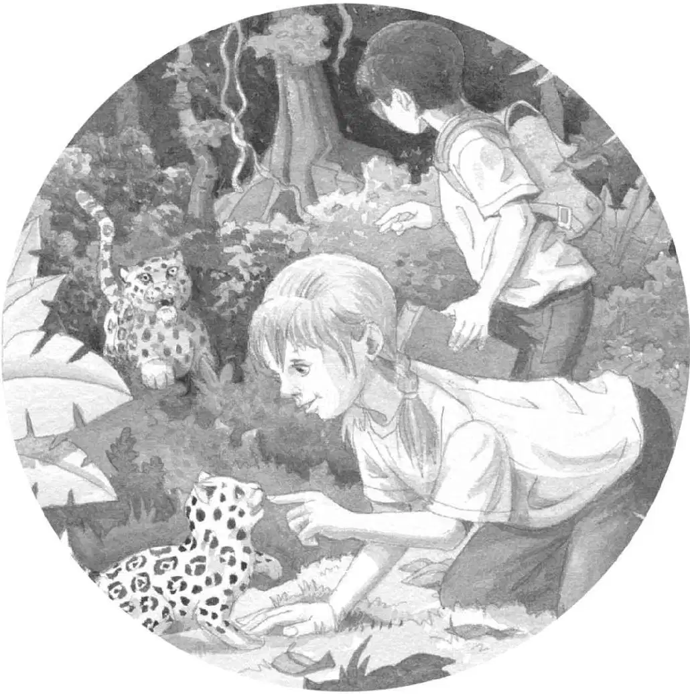

雨林里的孩子
在雨林里长大的孩子会学习到很多知识。让我们来看一看他们都学了些什么吧。
1.吃什么
雨林里的一些动植物是有毒的，所以雨林里的孩子要学会分辨哪些东西有毒、哪些东西没毒。

2.打猎、采集和做饭
女孩儿要学习采摘植物，并将它们做成美味的菜肴。男孩儿则要学习如何使用长矛、弓箭和网进行捕猎。

3.娱乐
一天的劳作结束后，雨林里的人们会围坐在一起讲故事，有时还会唱歌、跳舞。所以，孩子们从小就能从父母和亲戚那里学习到这些技艺。

